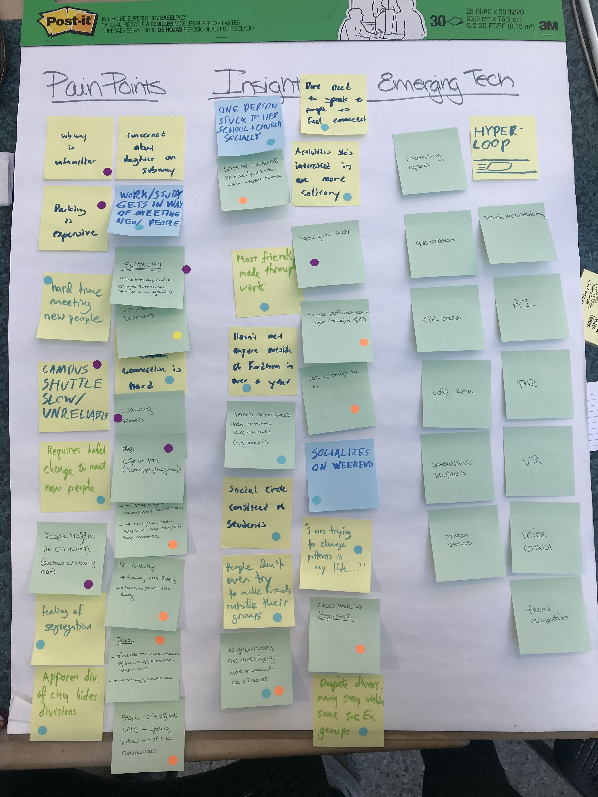
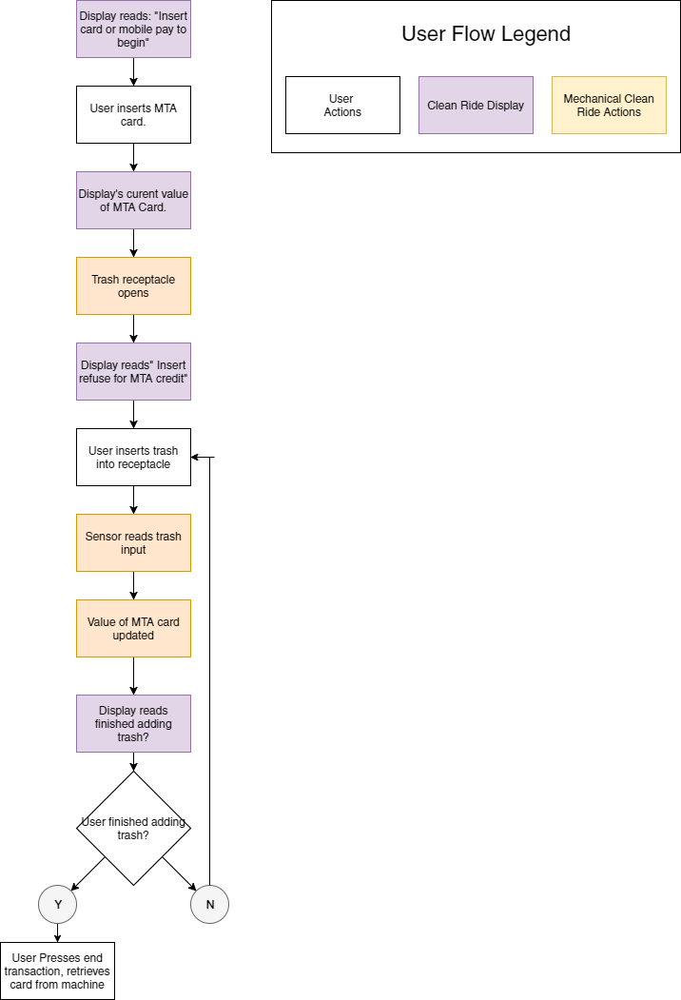
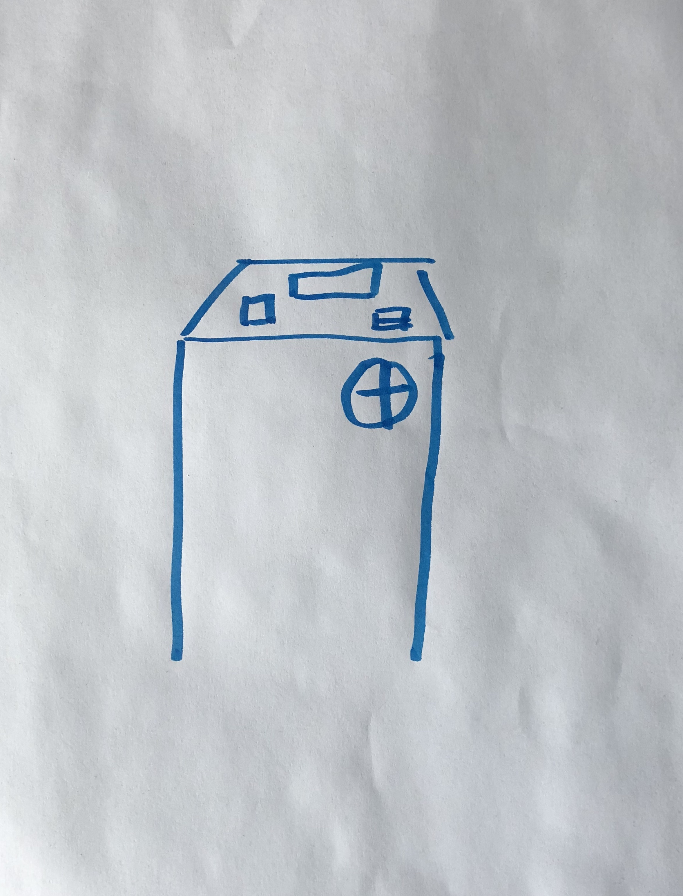
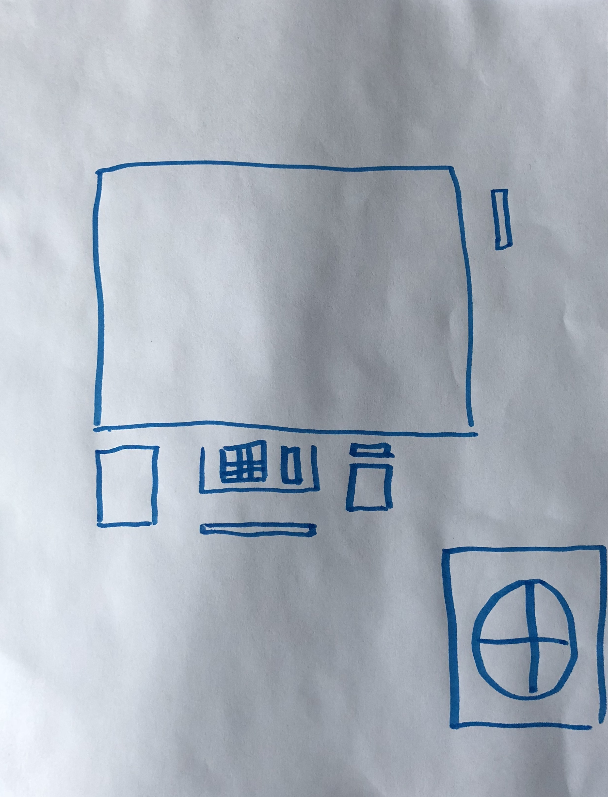

CleanRide
A subway cleanup effort designed to encourage conscious recylcing and trashing.
The Problem
New York subway stations are filled with trash, resulting in a longer and less pleasant commutes thanks to delays from trash fires, and increased maintenance.
The Solution
The community we’re focusing on are New Yorkers who commute, and we’re aligning them towards accomplishing a city-wide cleanup for the MTA in terms of litter.
Research
Our process started off with gathering research data. We based our data off of existing research for the cause of delays on the MTA, research data we pulled from an MTA employee, and short in-person polling from users of the MTA and transportation in general for NYC.
Pain Points & Insights
MTA Employee Interview
Confessed Litterer Reasons
Using our research data, we brainstormed a user persona for the typical MTA user and what they were looking for in their commute.
User Persona - New Yorkers who....
Ideation
Upon completion of our user research, we began ideating different possible solutions to our existing problem. We came up with several methods of solving a variety of issues found in our research data, but narrowed our selection down to a vending machine that would encourage New Yorkers to be more environmentally conscious.
Related (Emerging) Technologies
Features
Deciding to name our product "CleanRide", we then brainstormed a user flow for what a typical user wanted out of their MTA experience with CleanRide.
Wireframing
After we decided which direction to take our project, we went on to create simple wireframes for our vending machine and how the interface would look.
Above is the initial idea we had for our recycling/vending machine. It was a variation of the machines already in existence on MTA platforms that would check card balances, but with an additional receptacle for trash/recycling. 
We also planned an alternative interface that worked directly with the current MTA card vending machines, where we could still implement our idea but not disrupt the existing user experience too much. As such, this version is a mirror of the current vending machine with an additional receptacle for trash/recycling.
Mockups
After our lo-fi wireframes, we went on to develop a med-fi digital mockup of our interface and how it would work, as well as a hi-fi mockup of our actual vending machine. We decided to add a MobilePay option as well, for users to add currency back onto their bank account instead of just the MTA card. In making that decision, we wanted to be forward thinking in how this machine would operate throughout the years, as MobilePay has and continues to grow in adoption as a technology utilized by the majority.
Prototyping
The final step was to send out our full prototype for user testing, record their feedback and make subsequent small changes to the product to reflect that feedback. Overall, the experience was well received by the majority of users who tested it. Users enjoyed how it would promote a cleaner environment for commuters, as well as the simplicity of the design and functions. Some feedback we got from testing was:
Conclusion
Our product encourages positive collective behavior in spaces shared daily by millions, and offers a viable solution to a pervasive problem.
In brief:
Impact:
Doubts
My doubts going into this project was that we wouldn’t be able to find enough research to support our project, given that this was a hackathon and took place over the course of 8 hours.
Surprises
What surprised me the most was how positive the reaction to our product was. New Yorkers are very clearly fed up with the amount of construction and train delays for the MTA and are ready to do something about it to reduce those pain points.
More Time/Resources
If I had more time or resources, I would have made sure that our product could have introduced a viable workaround for homeless/less privileged who make it their daily living to collect recyclables.
Takeaways
This was my second hackathon, and I enjoyed the teamwork and group participation immensely. Being in a mentor program for most of my design career so far, having multiple viewpoints really made me enjoy how collaborative the whole process was.
More Projects